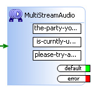

|
|
ActionStep MultiStreamAudio Description
Plays multiple files in the order specified (top to bottom). To add additional prompts, select the MultiStreamAudio ActionStep the select the pop-up bubble above the ActionStep:
The following example plays back: "the party you have dialed is currently unavailable please try again later"  Prompts can be edited by double clicking on the container inside the ActionStep. The order of the prompts is adjustable by dragging and dropping the prompt containers. NOTE: the default audio path in Asterisk is: /var/lib/asterisk/sounds Attributes
|